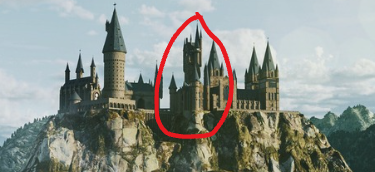

Artwork for Warner Bros Games by Gus Morais
This website was made to help people know what happens in each of the books.
The Harry Potter saga centers on a young wizard, Harry Potter, and his journey
from a neglected orphan to a key figure in a hidden magical world. Across seven
main books, published between 1997 and 2007, Harry attends Hogwarts School of
Witchcraft and Wizardry, makes close friends and bitter rivals, and gradually
uncovers the truth about his past and a dangerous dark wizard threatening both
the magical and non-magical worlds. Each book follows a school year, growing
darker and more complex as Harry matures, but always balancing mystery,
adventure, humor, and themes of friendship, courage, and choice. Harry Potter
and the Cursed Child, a play script released in 2016 and set about nineteen
years later, continues the story through Harry’s children, exploring the
weight of legacy, family pressures, and how the past can echo into the
present. Fantastic Beasts, originally a fictional Hogwarts textbook,
later expanded into a prequel film series set decades earlier(in the 1920s),
following magizoologist Newt Scamander and revealing the rise of an earlier
dark wizard, global wizarding politics, and the deeper history that eventually
shapes the current Harry Potter world. The Fantastic Beasts movies are not
direct adaptations of the 2001 book "Fantastic Beasts and Where to Find Them."
| Book | Year First Published |
|---|---|
| Philosopher's Stone | 1997 |
| Chamber of Secrets | 1998 |
| Prisoner of Azkaban | 1999 |
| Goblet of Fire | 2000 |
| Order of the Phoenix | 2003 |
| Half-Blood Prince | 2005 |
| Deathly Hallows | 2007 |
| The Cursed Child | 2016 |
| Fantastic Beasts | 2001 |
The following is a custom Lego Hogwarts Castle that I am building. It is not an official
Lego set. But the castle does include set 75969 LEGO "Harry Potter Hogwarts Astronomy
Tower, since it was my one of my first Lego sets. The castle includes many main features
such as the Great Hall, the Astronomy Tower, a mini Chamber of Secrets and the Quidditch
Pitch. The image below shows what part of the castle I have built so far.

Click the black arrow to start the slideshow(I can not fix it).
Give us a thumbs-up and thumbs-down if this page was helpful: